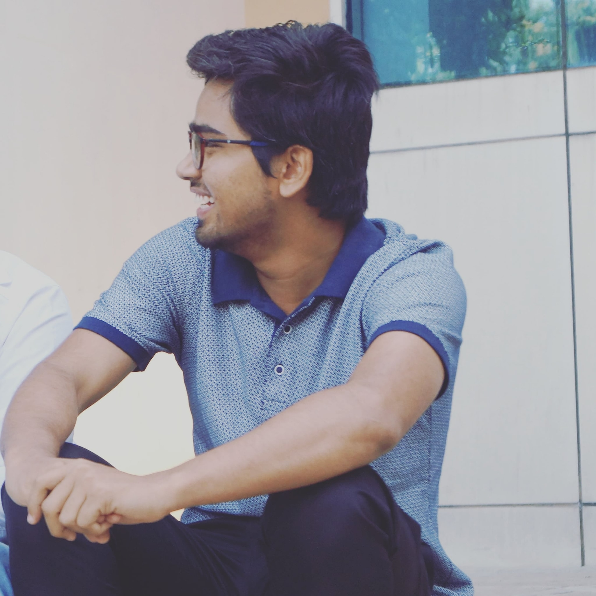

About me
Hi, I hope this finds you in good health. I am a Fourth-year Dual Degree in Electrical Engineering Undergraduate. I really enjoy the field, especially the coursework having a lot of workshops and labs because I like hands-on work. (on the contrary, I find it quite difficult to practice for written quizzes). I have been an Activity Associate at NSS previously, and I am a member of the Student Satellite Team (IITB SSP)

The Selection Process
The Exam :
The first selection process for the TI is to get qualified in the exam. There is one exam each for Analog, Digital, Software and Signal Processing. Your ICs should be able to provide you with the updated info about the test after checking with the company. I gave the exam for Analog and Digital domain. In Analog, questions came from RLC circuit, opamp, Mosfet, BIT. Time is very important for this exam as you will eventually realise that there is not enough time to solve the questions. Eventually, you will try to make guesses. So try to have more intuition about the circuit as this is very important for an Analog engineer and for the exam. Also, revise all the basics for the exam and try to complete all the questions.
The Interview :
If you qualify the exam then officially there will be two technical rounds and one HR interview. I got selected for the Analog domain. Then came the interview which was very stressful initially. But when I entered the room and after a little bit of chat with the interviewer, my nervousness disappeared. Interviewers start with 'tell me about yourself' and then they ask some questions based on your resume. It is important to be confident in resume related questions. Further, they can ask about the RC circuit, switch and capacitor; after that, they will build upon that question. Then there can be some questions from the op-amp, a circuit using op-amp etc. Also, they generally ask questions which you know and try not to give up on the questions as they may give hints. I did not have the second round and HR interview.
The Internship experience (Work from home mode)
Work from home (WFH) is very new for the company and also for us. I did not know how that would go as I was dependent on the mobile data and had lots of power cut in my area. But the company had made all the arrangements so I did not face any issue with mobile data and for the power cut, I had to reschedule my work to the next day. First 1-2 weeks was revising some basic concepts and reading the paper sent by the mentor. After that, I was working on my problem which was open-ended. Also as there is a gap between academia and industry, the specification for the problem is more constrained. In the midway of the second month, I optimized the circuit then there was a Monte Carlo simulation which took the worst case of the circuit and the results went out of the specification. So I talked to my mentor and extended my internship. I knew all about r circuit and the work that left was only the optimization of the circuit. The work was mundane but I did not give up. The expectation of the result kept me going and at the end of my internship, I optimized the circuit and had satisfactory results. For me, a major cons in work from home is lack of communication. There were two official meetings with my mentor and one with the project manager per week and we did have a regular chat through Whatsapp. But due to no physical communication, I did not get hands-on experience and couldn't interact with my co-interns from different colleges. Overall this internship was a very new and good experience. I am sure this was helpful. Feel free to reach out to me if you have some more queries. All the best.
Prashant Kurrey
Fourth Year Dual Degree
Electrical Engineering